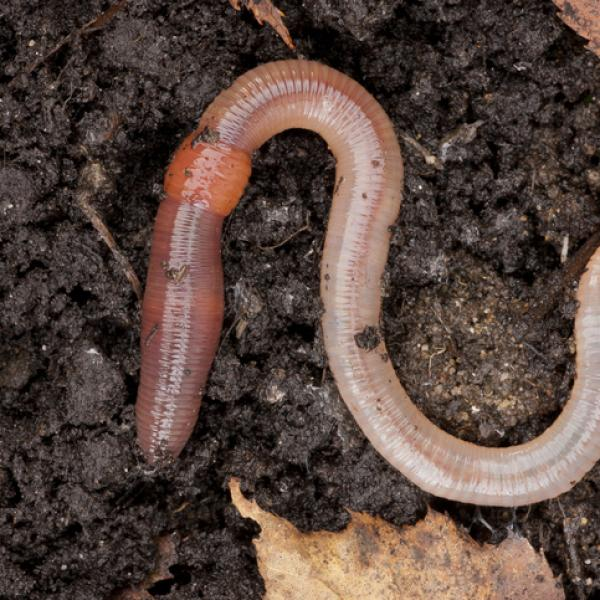
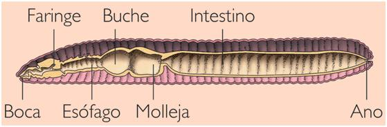
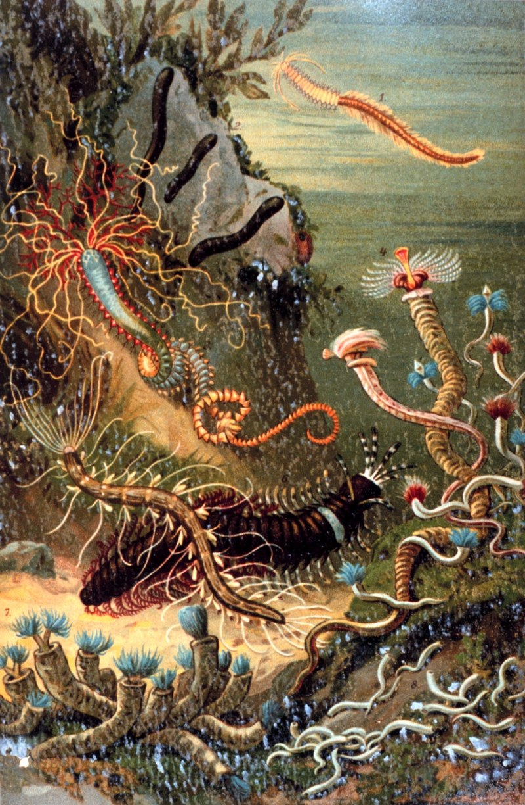
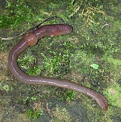
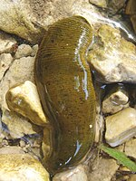
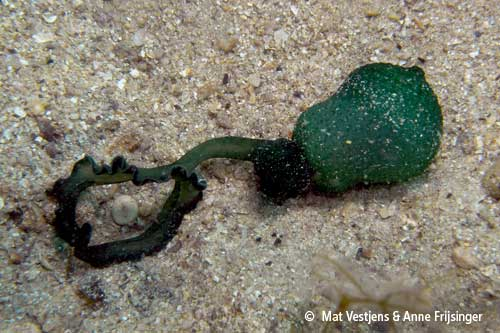
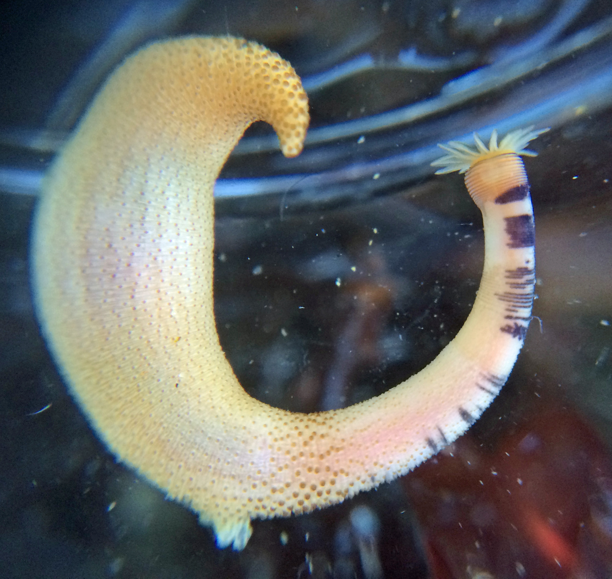
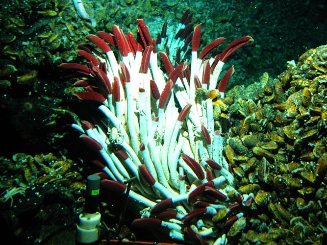
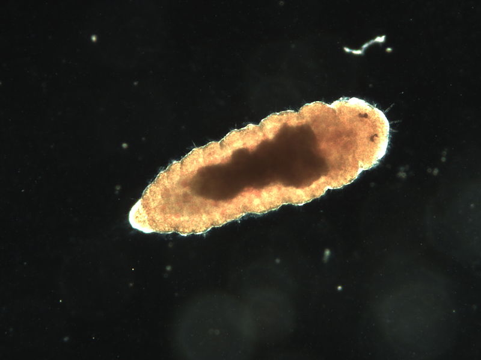
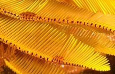

Invertebrados
¿Qué son los Anélios?
Son un gran filo de animales invertebrados protóstomos de aspecto vermiforme y por lo general con el cuerpo segmentado en anillos.
El cuerpo de los anélidos está compuesto por numerosos metámeros o anillos similares entre sí. La anatomía interna de los anélidos refleja también la externa, con repetición de diversos órganos en cada metámero.
Se han descrito más de 16 700 especies, que incluyen los gusanos marinos poliquetos, las lombrices de tierra, las sanguijuelas y otros gusanos relacionados. Se encuentran en la mayoría de los ambientes húmedos, sobre todo en el mar, pero también en agua dulce, e incluso hay especies terrestres. Su longitud va desde menos de un milímetro hasta más de 3 metros.
En el lenguaje popular, se suele reunir a varios grupos de invertebrados bajo el nombre de "gusanos", término sin ningún valor taxonómico; muchas de las semejanzas entre estos filos de gusanos son convergencias evolutivas sin valor filogenético. No todos los gusanos son anélidos. Existen diversos invertebrados con el cuerpo blando, alargado y cilíndrico que no pertenecen al grupo de los anélidos. Es el caso de los nematodos o los platelmintos, y de las larvas de algunos artrópodos, como las orugas que dan lugar a las mariposas.

Anatomía
Los anélidos son animales triblásticos provistos de una cavidad del cuerpo llamada celoma. Dicha cavidad está llena de fluido en el cual están suspendidos el intestino y otros órganos. Los oligoquetos y poliquetos tienen típicamente celomas espaciosos; en las sanguijuelas (Hirudinea), el celoma está en gran parte lleno de tejido y reducido a un sistema de canales estrechos. El celoma está dividido en segmentos, por medio de tabiques transversales, esto presenta una novedad evolutiva con respecto a los gusanos no segmentados, ya que al estar el celoma dividido en los distintos metámeros le permite, mediante la presión hidrostática que genera esta cavidad, realizar movimientos peristálticos, y así la locomoción del animal. En las especies más típicas, cada tabique separa un segmento del cuerpo, que incluye una porción de los sistemas nervioso y circulatorio, permitiendo que funcionen de modo relativamente independiente. A cada uno de estos segmentos independientes se le llama metámero. Cada metámero está marcado externamente por uno o más anillos ("anulli"). Los primeros metámeros forman la cabeza (hay pues, cefalización); el resto forman el tronco. La cabeza posee ganglios cerebroides y órganos sensoriales (visuales, olfatorios, táctiles).
El cuerpo de los anélidos está recubierto por una epidermis que segrega una delgada cutícula protectora; bajo la epidermis hay una capa de musculatura circular y bajo ésta una de fibras musculares longitudinales. En la lombriz de tierra, los músculos longitudinales están reforzados por laminillas de colágeno, y las sanguijuelas tiene una capa doble de músculos entre la capa de músculos circulares externa y la capa de músculos longitudinales interna. En la mayoría de las especies que existen hay unas cerdas o quetas, lo que da nombre a los gusanos poliquetos marinos, y a las lombrices de tierra (oligoquetos).

Reproducción
Reproducción asexual
La reproducción asexual por escisión es un método usado por algunos anélidos y permite que se reproduzcan rápidamente. La parte posterior del cuerpo se desprende y forma un nuevo individuo. La posición de rotura está determinada generalmente por un crecimiento epidérmico. Lumbriculus y Aulophorus, por ejemplo, son conocidos por reproducirse rompiendo el cuerpo en fragmentos semejantes. Muchos otros grupos no pueden reproducirse de esta forma, aunque pueden regenerar la mayor parte de los segmentos posteriores en la mayoría de los casos.
Reproducción sexual
La reproducción sexual permite que una especie se adapte mejor a su ambiente. Algunas especies de anélidos son hermafroditas, mientras que otras tienen sexos separados. Los anélidos hermafroditas, como la lombriz de tierra, se aparean durante todo el año en condiciones ambientales favorables. La lombriz de tierra se aparea por copulación. Una pareja de lombrices se atrae por las secreciones de cada una: para copular ponen sus cuerpos juntos con sus cabezas en direcciones opuestas. El espermatozoide es transferido desde el poro masculino a la otra lombriz. Diferentes sistemas espermáticos han sido observados en diversos géneros: espermatecas internas (cámara para almacenar esperma) o espermatóforos, que son conectados al exterior del cuerpo de la otra lombriz.
Clasificación
Polychaeta
Los poliquetos (Polychaeta, griego "muchas quetas") son una clase parafilética del filo de los anélidos. Es el grupo más numeroso de ese filo, con unas 12 141 especies descritas y se supone el más primitivo, es decir, el que más se asemejaría en sus rasgos al tipo original del filo. Son animales acuáticos, casi exclusivamente marinos, caracterizados por portar en cada segmento un par de parápodos, con su rama dorsal y su rama ventral, dotados de numerosas quetas (lo que da nombre a los poliquetos, literalmente "muchas quetas"). Son sobre todo carnívoros de fondos arenosos, pero existen formas especializadas en comer sedimento, al estilo de lo que las lombrices de tierra hacen con el suelo, o filtrar el agua. El grupo es parafilético, derivando de él las clases más especializadas del filo y otros filos de animales históricamente no considerados anélidos.
Antiguamente se veía en ellos el modelo del antepasado no solo de los otros anélidos, sino también de los artrópodos, por su segmentación o su anatomía nerviosa. Los resultados de los análisis filogenéticos de los datos moleculares, han demostrado que los artrópodos no derivan de anélidos poliquetos, y muestran que los anélidos están más relacionados con los moluscos, platelmintos, nemertinos, entre otros filos.

Clitellata
Los clitelados (Clitellata) son una clase de vermes anélidos, caracterizados por poseer un clitelo, un 'collar' que forma una envuelta reproductiva durante parte de su ciclo de vida. Al contrario que los poliquetos, carecen de parápodos y la cabeza está poco desarrollada.
Oligochaeta
Los oligoquetos (Oligochaeta, del griego oligos, poco, pequeño, y del latín chaetae, cerdas) o lombrices son una subclase del filo Annelida (anélidos o gusanos segmentados), clase Clitellata (que poseen un clitelo o 'collar' que forma un capullo reproductivo), que incluye de 3500 a 4000 especies, las cuales se encuentran en una gran variedad de hábitats: terrestres (la gran mayoría), marinos, dulceacuícolas y de vida parasitaria (muy pocos).
A diferencia de los poliquetos, los oligoquetos están desprovistos de parápodos y las quetas son pequeñas y escasas; en los oligoquetos marinos, dichas quetas son más largas y abundantes que en los terrestres. El oligoqueto más representativo es la lombriz de tierra.

Hirudinea
Los hirudíneos (Hirudinea) son una clase del filo anélidos, conocidos popularmente como sanguijuelas. Hay hirudíneos marinos, terrestres y arborícolas, pero la gran mayoría de especies son de agua dulce. Como sus parientes cercanos, los oligoquetos, comparten la presencia de un clitelo. Su desarrollada elasticidad y flexibilidad es sorprendente. Su longevidad media es de 27 años.
Hirudo es capaz de tragarse entera una lombriz tan larga como él. Son depredadores y se alimentan de pequeños gusanos, gasterópodos, crustáceos, larvas, renacuajos, alevines, etc.

Grupos atípicos
Los anélidos se definen como gusanos segmentados, sin embargo, hay grupos de anélidos que no son segmentados o que presentan otra morfología, muchos de los cuales han sido considerados tradicionalmente filos independientes estrechamente relacionados con los anélidos, aunque evolutivamente provendrían de primitivos poliquetos, tal como lo reveló el análisis filogenético molecular.
Estos son:
Echiura
Los equiuroideos o equiuros (Echiura, del griego echinos, "espina" y ourá, "cola") son una subclase de anélidos de la clase Polychaeta. Anteriormente se clasificaban como un filo independiente pero los análisis moleculares lo muestran como un grupo derivado de los anélidos. Miden entre 3 y 25 cm de largo. Son marinos, viven en la arena, fango o fisuras de rocas. Se conocen unas 150 especies actuales; el equiuroideo fósil más antiguo data del Ordovícico medio.

Sipuncula
Los sipúnculos o sipuncúlidos (Sipuncula) son un grupo de anélidos, marinos y con el cuerpo no segmentado. Se conocen entre 144 y 320 especies. Se les denomina gusanos cacahuete, una traducción literal de su nombre común en inglés, peanut worms. Tradicionalmente se clasificaban como un filo aparte, pero los análisis genéticos los clasifican como un grupo derivado de los anélidos razón por la cual se incluyen en este filo, mientras que otros análisis basados en morfología y fósiles no han aceptado esta propuesta.

siboglínidos
Los siboglínidos (Siboglinidae) o pogonóforos (Pogonophora), a veces Vestimentifera son un grupo escasamente conocido de animales triblásticos, vermiformes y tubícolas. No fueron descubiertos hasta el año 1900, cuando los científicos del buque oceanográfico neerlandés Siboga encontraron algunos ejemplares por medio de dragados a grandes profundidades en la costa de Indonesia.
Se conocen 196 especies actuales, que suelen vivir en los fondos marinos, generalmente a profundidades mayores de 200 metros. Esta circunstancia, unida a su extrema fragilidad dificulta en gran medida su estudio. Son animales sésiles, y viven en tubos verticales, compuestos por una mezcla de proteínas y quitina, que ellos mismos fabrican a partir de la epidermis. Este tubo tiene una consistencia sólida y rígida, pero en el género Riftia es flexible.

Archiannelida
Los arquianélidos, antes conocidos como el taxón Archiannelida (B. Hatschek, 1878) o Haplodrili (R. Lankester), son un grupo de gusanos anélidos muchas veces no segmentados y de hábitat meiofaunal, habitando entre los granos de arena del sedimento marino, y que por su simplicidad y pequeño tamaño fueron considerados primitivos. Figuró como filo, clase o como un orden dentro de Polychaeta, sin embargo, los análisis filogenéticos no validan este grupo y podría tratarse de un grupo polifilético o de uno parafilético basal con respecto a los clados Errantia y Sedentaria y conformado por familias que actualmente están clasificadas en Polychaeta incertae sedis, pero que podrían estar agrupadas en los siguientes clados:
- Protodriliformia
- Orbiniida

Archiannelida
Los ortonéctidos (Orthonectida del griego orthós, “recto” y nectós, “nadar”, “que nada recto”) son organismos considerados un tipo especializado de Mesozoa y se consideran los únicos representantes de dicha rama. Son un pequeño grupo de animales parásitos marinos, que se encuentran en moluscos, equinodermos, entre otros. Este grupo cuenta con aproximadamente 23 especies, en cuatro géneros conocidos y la especie Rhopalura ophiocomae es la más conocida. Al inicio se consideró el filo una clase y se incluía en Mesozoa y además, se incluyen algunos de los animales pluricelulares más simples.
.jpg)
Archiannelida
Los mizostómidos (Myzostomida) son un grupo de pequeños anélidos que parasitan algunos tipos de equinodermos como los crinoideos. Fueron descritos por primera vez en 1827 por Rudolf Leuckart. Para algunos autores no son más que un orden perteneciente a la clase Polychaeta.
La forma típica de los mizostómidos es aplanada y redondeada con un delgado borde desde el que se prolongan radialmente delicados pelos llamados cirros. La superficie dorsal es suave y en la ventral existen cinco pares de parápodos dotados de garfios con los que se aferran al hospedador. Poseen además cuatro órganos succionadores aparentemente con capacidad sensorial. La boca y el ano suelen estar en ambos extremos de la superficie ventral de los animales. La mayoría son hermafroditas con órganos reproductores rudimentarios. Algunas especies se desplazan en el cuerpo del hospedador, mientras otras permanecen aferradas a los órganos diana del mismo.

Parentescos
Filogenia
Los artrópodos y sus parientes han sido considerados largo tiempo los parientes más cercanos de los anélidos, ya que tienen en común una organización segmentada, dando origen a la agrupación de los Articulata. Sin embargo, un número de diferencias entre los dos grupos sugiere que en realidad es un caso de convergencia evolutiva. Los otros grupos importantes que tienen una relación definida con los anélidos son los moluscos, platelmintos, nemertinos, lofoforados, los cuales comparte con ellos la presencia de larvas trocóforas, sin embargo esta característica resulta ser una plesiomorfía para ambos grupos ya que otros filos también tienen este rasgo. Los anélidos, moluscos, platelmintos, nemertinos, entre otros filos están así unidos en el clado Lophotrochozoa, una categoría fuertemente apoyada por evidencia molecular. En general los nemertinos, lofoforados y moluscos pueden considerarse parientes cercanos de los anélidos.
Los análisis filogenéticos incluyen dentro de Annelida a grupos como Sipuncula, Echiura y Pogonophora. Sin embargo, un análisis reciente (2016) basado en evidencia fósil y morfológica ubica a Sipuncula como un clado hermano del resto de anélidos, lo que justificaría su ubicación como filo independiente.
Por otro lado los análisis genéticos presentan a Sipuncula como grupo derivado de poliquetos ancestrales y las relaciones son aproximadamente las siguientes entre los poliquetos y los restantes grupos incluidos en Annelida.
- Palaeoannelida
- Chaetopteriformia
- Amphinomorpha
- Pleistoannelida
- Sedentaria
- Clitellatomorpha